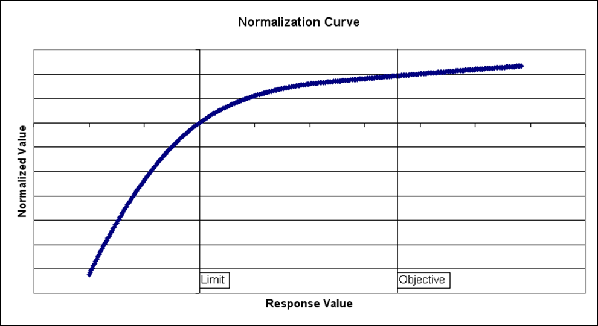

Metrics¶
Calculation of metrics indicating the quality of a grid configuration is done by a custom helics federate that communicates with other federates as needed to get calculated values for quantities of interest.
In the context of this application, a metric consists of
A value generated periodically during the course of a simulation that is of interest to a user.
A set of inputs that indicate the user’s goals for that value.
As an example, a user may indicate that they are interested in the voltage level at a particular bus. That satisfies item 1 above. To stipulate their goals for it, they may indicate that they would like the voltage to remain as close to 1 p.u. as possible. That satisfies item 2 above.
The metrics framework allows for three types of metric valuations, also referred to as “sense” or “improvement type”. Those are
Minimizewhich indicates that a value is better the smaller it becomesMaximizewhich indicates that a value is better the larger it becomesSeek Valuewhich indicates that a specific value is sought and the closer to it the better.
The SSIM metric system must allow for simultaneous evaluation of many, potentially hundreds, of metrics and to support direct comparison of different grid configurations to determine which is better. This allows search algorithms to perform optimization and supports users who may not be able to account for hundreds of individual measures manually when deciding whether or not a solution is good.
To further complicate the situation, many metrics must be accumulated over time. Take the example of bus voltage above. When doing a grid simulation over a long period of time with changing conditions (loading, generation, etc.), the voltage at the bus will vary up and down. It may at times be within tolerances while at others, be out of tolerances. The metric system must be able to accumulate the “fitness” of a measure such as voltage that varies with time and support comparison with other time varying or non-time varying measures.
While it is challenging enough to compare multiple similar metrics between two different configurations, it can become an impossible task to manually decide which is a better configuration when there are many, very different metrics all being tracked. For example, perhaps a user is interested in voltage, frequency, reliability, resilience measures, service provision, operational characteristics of grid assets, load service levels, etc. all at the same time. The metric system must allow for sensible evaluation of configurations over all those performance dimensions to determine which solutions are better that which others.
Normalization¶
In order to compare across metrics of different kinds, units, and scales, a normalization process is used. This process results in a unitless, scaled value that can be compared on an equivalent basis to the values calculated for other metrics. Without a process such as this, attempting to aggregate metric values together to create an overall fitness would result in the disproportionate emphasis on those metrics with greater scale.
For example, if per-unit voltage is on the order of 1, and cost is on the order of millions of dollars, simpy adding raw values together would result in no concern for voltage and all empahsis being placed on improving cost.
To solve this problem, the following normalization scheme is implemented in SSIM.
A family of functional forms representing the normalization method exists, 1 for each of the improvement types (minimize, maximize, and seek value). Starting with maximization, the equation(s) used, when plotted, produce a curve as shown below.
This curve consists of 3 quadratic sections; the section below the limit, the section between the limit and objective, and the section above the objective. Each section is C0 and C1 constrained with any other section to which it joins. There are parameters that can be adjusted to control the details of the shape of the curve. Though they are not controllable in SSIM, for completeness and to give information needed for the equations below, the are
A -Impacts the curvature below the limit
B -Sets the slope at the limit
C -Sets the normalized value (y value) at the limit
G -Impacts the curvature above the objective
The shape of this curve is deliberate. It has several features that make it desirable for use in the context of optimization. They include
It is continuous (except in the case of the seek value for which there is a discontinuity at the objective value).
It has a monotonically decreasing slope as the raw response value gets better (effects a diminishing returns scenario and enables sensible trade-offs)
It effects the desired behavior of penalizing unacceptable values more heavily than it rewards exceptionally good values.
It is parameterizable particularly in how quickly quality drops as one moves further below the limit or further above the objective.
For minimization, the process is exactly the same but the curve is mirrored such that the limit is above the objective and the curve goes from higher values on the left to lower values on the right.
The equations that define the 3 portions of the curve are defined below. Prior to computing these equations, a pre-normalization is applied to the raw value (x) as follows.
Where L is the limit and O is the objective. The section of the curve used is determined by the value of x relative to the limit and objective. The equations are as follows:
If x is below the limit:
If x is between the limit and objective:
If x is above the objective:
The above can be simplified with the following definitions:
Then:
If x is between the limit and objective:
If x is above the objective:
Overall Process¶
Given the normalization process detailed above, one can not only normalize individual values, but one can apply a process of integration of those normalized values over time to arrive at a value that indicates total, overall fitness over time and over multiple metrics. The resulting value has no physical interpretation and is therefore only useful for comparison purposes.
Stated another way, one can compute the total fitness for each of multiple configurations of a distribution grid and use that total fitness value to sort the configurations by how good they are. The phrase “how good they are” should be interpreted as meaning “how well they meet your metric objectives overall”.
Overall fitness is computed as the sum of all normalized response values over all metrics over all time
where \(n_m\) is the normalized value for the metric in the time period \(\Delta t\).